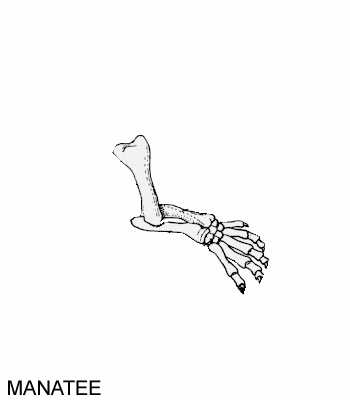

Homologias da Forelimb Mamífera
Aviso: A imagem animada mostrada abaixo tem como objetivo ilustrar as semelhanças na estrutura da forelimb de várias espécies diferentes de mamíferos. Ela não deve ser interpretada como uma sequência evolutiva, já que cada forelimb representa uma espécie moderna. Espécies modernas compartilham ancestrais comuns; elas não evoluem umas para as outras. Além disso, esteja ciente de que as imagens não estão em escala.

A imagem é bastante grande em tamanho (252 kbytes), então você pode ter que esperar alguns segundos enquanto ela carrega. Se você tiver uma conexão lenta à Internet, pode levar ainda mais tempo. Imagens animadas como a acima podem ser visualizadas com o Netscape Navigator 3.0 ou o Microsoft Internet Explorer 3.0.
Artigos de Perguntas Frequentes